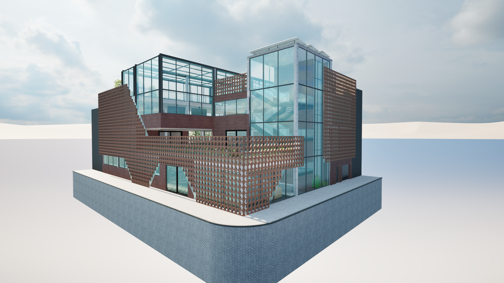
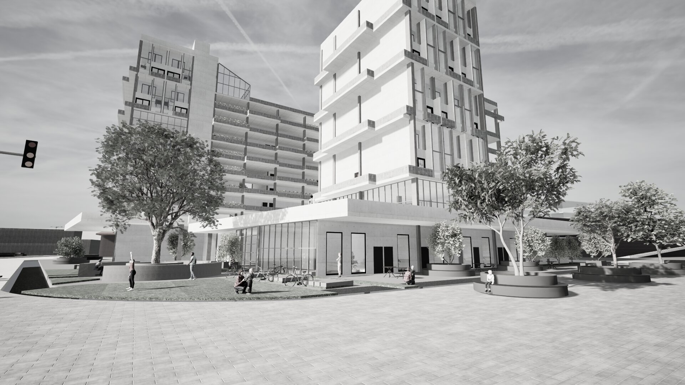

Situado al oriente de la plaza Samper Mendoza, infusión raíz tiene como proposito revitalizar el barrio samper mendoza, resaltano su identidad botanica y promover su enfoque gastronomico.

El proyecto Raíces Urbanas busca revitalizar espacios públicos en el barrio samper mendoza, promoviendo la biodiversidad y la sostenibilidad ambiental.